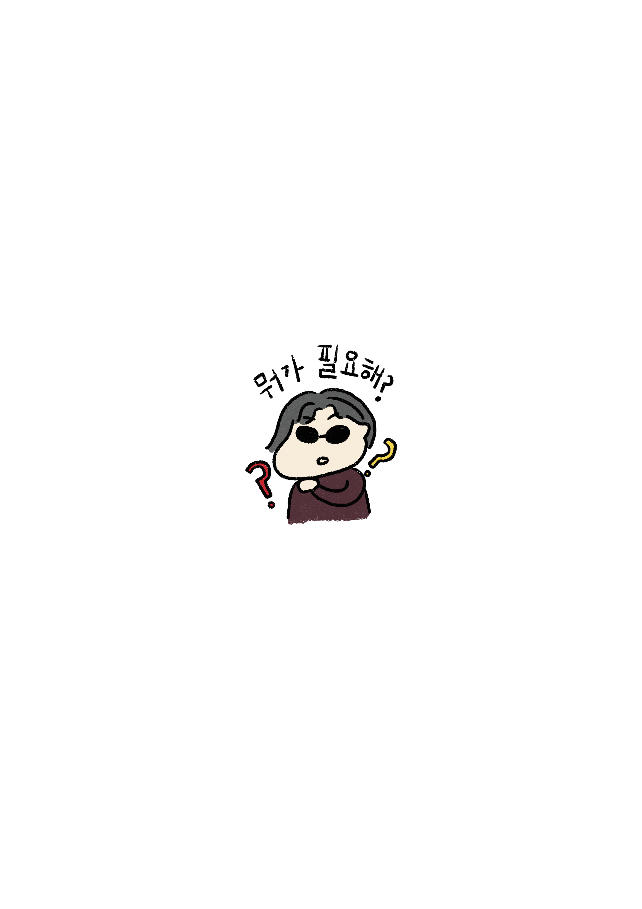
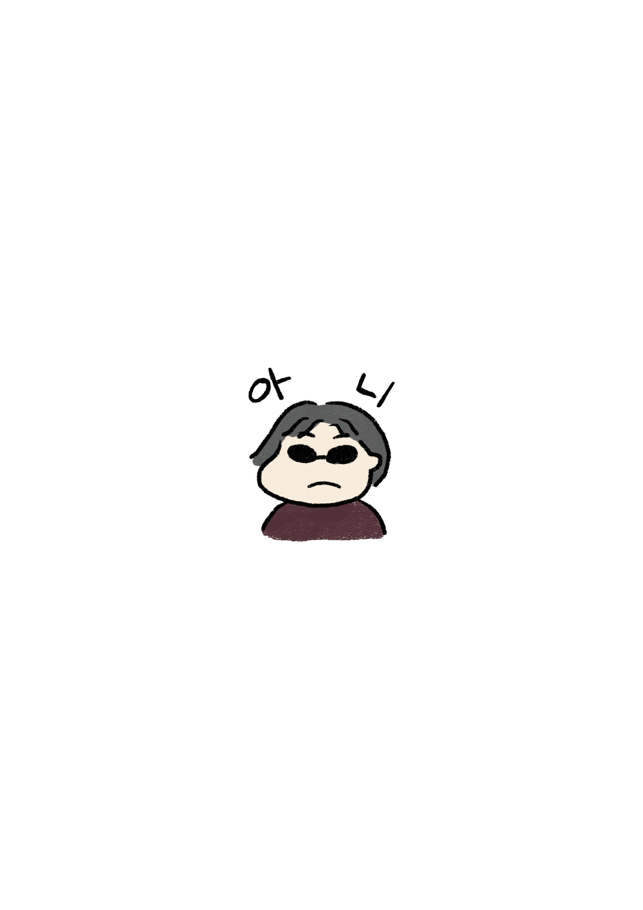

AM 06:50 - AM 08:40
-
엑시트 활동가 찬욱의 글
안부를 묻는 일!
청소년은 친구가 아니다! 엑시트 활동을 시작하고 제일 먼저 새긴
말이다. TV도, 내 주변과 나도 청소년을 친구라고 불렀는데 그게 귀에
들어오지도, 어색하지도 않았다.
그런데 이제는 ‘친구’, ‘학생’, 반말이 귀에 탁 걸린다. 속으로 ‘니
친구 아닌데.’ 할때도 있고 대놓고 ‘너 저 사람이랑 친구야?’ ‘아는
사이야?’ 묻기도 한다.
끊임없이 말 건네기!
초기에 청소년들이랑 관계를 잘 맺으려고 엄청 애썼었다. 아니다. 미움
받지 않으려고 애썼다. 청소년들 중에 잘 튕겨내는 이들이 있는데 그
청소년들이 듣기 싫어할법한 이야기는 잘 못했다. “왜 지금
화내는거에요?”라는 물음을 하기가 너무 힘들었다. 좋은 관계를
유지하고, 만들어야 하는데 이 말들은 할 수 없는 말 같았다.
그런데 이런 말을 한다고 해서 관계가 멀어지는 게 아니라 이 말들로
관계가 더 쌓이기도 한다는 걸 활동하면서 느꼈다. 엑시트에서는 “그런
행동 하지마!”라고 금지하거나 명령하지 않고, 계속 부탁하고 제안한다.
“불편한 이유를 알려줄 수 있어요?”, “같이 해줄 수 있어요?” 하면서
묻고 계속 더 이야기하면서 관계는 더 쌓이는 것 같다.
나는 이제 치대고 찡찡댄다. 듣기 싫은말도 하고, 튕겨내는 이들이
있어도 ‘다섯마디는 걸어야지’ 대답을 못 듣더라도 꼭 말을걸자. 안부를
묻자. 이렇게 끊임없이 말 거는 것도 엑시트의 방식이다. 어떤 목적이
있어서가 아니라 이 사람과 더 잘 만나기 위해서 계속 말을 건다. 내가
원하는 대화가 아니라고 돌아서 있지 않고 여러 가지로 시도한다.

